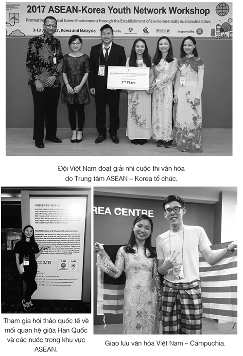

Từ trạm xe điện đến kho lưu trữ thành phố đi bộ mất chưa đến nửa giờ, nhưng trên tất cả những đại lộ dẫn đến cung điện đều dựng rào chắn của cảnh sát. Trên hè phố dân chúng chen chúc dày đặc như trong ngày Đám Cưới Đẫm Máu, và Jacob cảm thấy anh đang bị đám đông cuốn đi như bè gỗ trôi dạt. Kami’en đang ở Vena. Sắp có một đoàn diễu hành để ăn mừng sự kiện cô vợ người trần của ông ta mang thai. Trên vệ đường đội cận vệ của nữ hoàng mới trang trí đèn đường và mặt tiền những ngôi nhà bằng những tràng hoa. Đội cận vệ, không có ngoại lệ, đều là quân Goyl. Amalie chỉ giao cho quân lính của phu quân cô ta nhiệm vụ bảo vệ mình. Người ta đồn rằng cô ta chỉ thích chọn những người đàn ông có da mã não giống Kami’en. Những tràng hoa treo đầy những bông hoa làm từ đá mặt trăng, và những rào chắn dọc đường phố được trang trí bằng nhánh cây làm từ bạc. Mặc tất cả, những gì Jacob thấy chỉ là hình ảnh Troisclerq cài hoa lên váy Cáo. Chuyện gì xảy ra với anh vậy? Ngươi đang ghen, Jacob. Ngươi không còn việc gì khác để lo sao?
Anh rẽ vào con hẻm kế tiếp - và một lần nữa lại đứng trước một rào chắn. Chết tiệt. Anh đang bịp ai chứ? Gã lai đã tìm ra quả tim từ lâu. Ngừng lại, Jacob . Nhưng anh không thể nhớ được đã có khi nào mệt mỏi thế này chưa. Thậm chí khi nỗi sợ hãi trước cái chết len qua màn sương mù trong đầu, anh cũng không cảm thấy mệt mỏi đến nhường này.
Anh lôi trong túi ra tập thông tin hướng dẫn về thành phố mà anh đã mua ở trạm xe điện. Đó là một thứ vừa to vừa nặng, lắm chữ, dày như một quyển tiểu thuyết và in chữ li ti, nhưng bọn Goyl đã thay đổi rất nhiều thứ ở Vena đến nỗi anh khó mà biết chỗ. Kho lưu trữ nằm trên một trong những con đường đoàn diễu hành sẽ đi qua. Có lẽ anh thử đến lăng mộ trước thì hơn. Anh lật những trang giấy in dày đặc chữ - một tay giữ tấm danh thiếp của Earlking.
Cậu đang lãng phí thời gian, Jacob.
Bảo tàng lịch sử Austrie.
Hội trường số 33.
Người đàn ông là đôi mắt của Guismund cùng biết quả tim của ông ta.
Jacob nhìn xuôi xuống con đường. Giờ đây anh thường xuyên cảm nhận được cơn đau trong lồng ngực, như một vết thương không lành. Cái giá có thể trả được . Anh vẫy một chiếc xe ngựa và đưa xà ích địa chỉ của bảo tàng.
Những cây cột được tạo hình như cơ thể những người khổng lồ bị trói. Dọc lối vào là một diềm trang trí hình những con rồng bị chế ngự. Hình những người lùn và người lùn giúp việc được chạm trổ dưới những khung cửa sổ. Tòa nhà hiện nay dùng làm Bảo tàng Lịch sử Austrien trước kia đã từng là một cung điện. Một vị tổ tiên của nữ hoàng bị lật đổ phác họa ra từng chi tiết của tòa nhà. Thời đó người ta gọi ông là Hoàng Tử Giả Kim, nhưng tượng ông không được dựng trước bảo tàng, mà là tượng chắt của ông, hai bên là tượng hai tướng quân thắng trận cưỡi ngựa. Jacob chen qua một nhóm những học sinh mặc đồng phục đang tràn xuống cầu thang, và đưa tiền vào cổng cho người phụ nữ sau quầy vé. Thật may là một thợ kim hoàn đã đồng ý đổi vài đồng vàng ỉu xìu mà chiếc khăn tay vàng làm ra lấy vài đồng Gulde [*] , khắc trên những đồng tiền ấy là khuôn mặt nhìn nghiêng của Kami’en thay vì tay của nữ hoàng.
Bảo tàng không sở hữu những vật phẩm mang phép thuật như kho báu của nữ hoàng, nhưng ngay trong những hội trường của nó Jacob đã học được về thế giới sau gương nhiều hơn rất nhiều người từng được sinh ra ở đây.
Vũ khí và áo giáp của những kỵ sĩ Austrien, giáo mác dài để chiến đấu chống lại người khổng lồ, bẫy những kẻ ăn thịt người, những chiếc yên cương cưỡi rồng mạ vàng, một bản sao chiếc vương miện đầu tiên của nữ hoàng, đầu con ngựa đã cảnh báo mẹ của nữ hoàng về quả táo tẩm độc... Hàng ngàn thứ làm sống lại quá khứ của Austrien. Jacob vẫn còn nhớ rất rõ lần đầu tiên anh đến thăm nơi này. Lão Chanute đưa anh tới đây để tìm thông tin về một tòa lâu đài đã chìm sâu dưới hồ hơn trăm năm trước. Jacob dừng chân trước mỗi vật phẩm đến tận khi lão Chanute tóm cổ và thô bạo lỗi anh đi tiếp. Nhưng Jacob đều lén quay trở lại mỗi lần họ nghỉ chân ở Vena và lão Chanute đã ngủ trong cơn say khướt. Lẽ ra anh nhắm mắt vẫn có thể đi lại trong những hội trường, nhưng người Goyl đã thay đổi không chỉ bản đồ thành phố Vena. Họ thay đổi cả lịch sử của Austrien.
Trong căn phòng mà Jacob đang dừng chân, chỉ vài tháng trước thôi người ta vẫn còn có thể đến thăm bộ lễ phục của nữ hoàng bị lật đổ. Giờ đây chiếm chỗ trong căn phòng là bộ váy cưới đẫm máu của con gái bà. Con búp bê sáp đang mặc bộ váy trông giống Amalie một cách kỳ quái. Lớp sáp mô phỏng làn da đá của Kami’en trông không giống đến phân nửa. Jacob bước đến gần bức tượng sáp đứng bên cạnh nhà vua. Người Goyl ngọc thạch nhìn anh bằng ánh mắt thủy tinh vàng chóe. Bức tượng rất giống Will đến nỗi Jacob thấy khó mà chịu đựng được khi nhìn nó. Dĩ nhiên có cả tượng Hắc Tiên nữa. Cô ta đứng hơi chếch sang bên một chút, dưới chân cô ta là những thây người bằng sáp phủ đầy bướm ma đen.
Đã là quá khứ rồi, như tất cả những thứ khác ở đây, Jacob .
Vậy mà chỉ trong vài nhịp thở, anh bị mang trở lại nhà thờ... Clara nằm giữa những xác chết, Will mặc bộ đồng phục xám ngoét, ướt sũng máu bọn Goyl, còn lưỡi Jacob đang thốt ra cái tên đã gieo mầm cái chết lên ngực anh.
Ánh mắt thủy tinh của em trai anh theo chân Jacob từ căn phòng này sang căn phòng khác. Suýt chút nữa thì anh bỏ qua hội trường số 33.
Những bức tường sơn đỏ phủ đầy chân dung của gia đình hoàng gia Austrien. Chúng được treo đến tận trần, khung hình nọ sát khung hình kia, vô số những gương mặt với màu nâu gỉ đồng của hàng thế kỷ trước. Ông bà cố của nữ hoàng bị lật đổ, bà ngoại của bà và những người anh em mang tiếng tăm xấu xa của bà ta, vị hoàng đế mà mọi người chỉ gọi bằng cái tên Đứa trẻ bị thay thế [*] (ông ta có lẽ đúng là như thế). Dĩ nhiên có cả chân dung của Guismund. Ông ta không vận áo choàng làm từ lông mèo của phù thủy như trong bức chân dung trên cửa hầm mộ, mà vận một bộ áo giáp của kỵ sĩ, chiếc mũ có hình dạng như đầu con sói đội vương miện trên huy hiệu của ông ta. Bên cạnh là chân dung của vợ và ba người con. Trên ảnh họ hãy còn rất trẻ và đứng sát nhau bên cạnh mẹ. Con ngươi trong mắt vợ của Guismund không phải con ngươi của một phù thủy, nhưng điều đó không ý nghĩa gì lắm. Phù thủy nào cũng có thể khoác lên mình bộ dạng của một phụ nữ người trần. Có cả chân dung của Feirefis và Gahrumet khi đã lên ngôi vua, nhưng Jacob chỉ nhìn chúng thoáng qua. Anh lướt ngang qua một bức chân dung của Orgeluse và chồng bà. Anh dừng lại trước bức tranh duy nhất trong hội trường số 33 không có thành viên vương triều nào. Jacob đã chú ý đến nó từ nhiều năm trước, vì người đàn ông nhìn ra từ khung tranh vàng nặng trịch trông giống hệt ông anh. Hendrick Goltzius Memling là họa sĩ hoàng gia của Kẻ Tàn Sát Phù Thủy, nhưng ông ta không chỉ nổi tiếng vì những tác phẩm nghệ thuật của mình. Người ta còn đồn đại về cuộc tình nồng cháy của ông và con gái Guismund. Bức tranh là một bức chân dung tự họa. Memling đã vẽ nó ba năm sau cái chết của Guismund.
Ông ta tự tay ghi ngày tháng lên bức tranh. Trên cổ ông ta đeo một viên đá có chân đế bằng vàng. Memling chạm vào nó với những ngón của bàn tay phải. Những ngón tay bị dị tật, nhưng người ta đồn rằng chúng có khả năng sử dụng những dụng cụ của một thợ khắc đồ đồng giỏi hơn bất kỳ người nào khác. Hòn đá có màu đen như than đá.
Những quả tim vàng và những quả tim đen... Lão Chanute nói bằng giọng gần như sùng kính khi lão kể cho Jacob nghe về chúng. “Những quả tim bằng vàng bắt nguồn từ những nhà giả kim. Thỉnh thoảng họ có những ý tưởng ngu ngốc biến tim mình thành vàng để sống bất tử. Vì vậy nhiều người đã cắt tim ra khỏi cơ thể sống của mình”
“Còn những quả màu đen?”, Jacob hỏi. “Một cậu bé mười ba tuổi quan tâm gì ở sự bất tử?”
“Những quả tim đen là của phù thủy,” lão Chanute trả lời. “Rất dễ nhầm chúng với đá quý màu đen. Bất cứ ai đeo nó trên cổ được cho là sẽ đạt được tất cả những gì hắn mong muốn, nhưng nếu đeo quá gần tim, nó sẽ lấy đi của người đó không chỉ niềm vui mà còn cả lương tri nữa.”
Jacob bước gần hơn đến bức tranh.
Memling nhìn anh với đôi mắt lạnh lùng. Có những câu chuyện đồn đại rằng ông ta không chỉ đầu độc vợ mình mà còn đầu độc cả Orgeluse vì ghen. Có lẽ nguyên nhân sự bất hạnh của bà chính là vì bà đã dâng tặng trái tim của cha mình cho người đàn ông bà yêu.